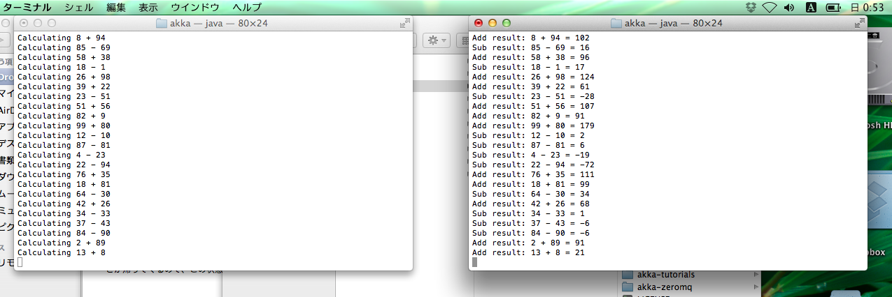

Akka Remoteを試す
概要
akkaのサンプルを落としてきて、remoteActorについて学ぶ。
解説用サンプル
https://github.com/sassembla/ScalaAkkaRemoteActorWithGradle
準備
サンプルならそのまま動く。
以下は、自分で環境から用意しようぜ、的な話。
まずはakkaをゲットしよう。
おぞましい事になる。
git clone git://github.com/akka/akka.git
で、手元にakkaが落ちてくる
重い
とっても重い
しかも70%超えたあたりから胸をしめつけるような重さ
重い
sbtでプロジェクトを走らせる
都合、2以上のプロジェクトを走らせる必要がある。
ひとつひとつをターミナルで実行する。
まずは一つ目、CalcApp
akkaのフォルダで、
env JAVA_OPTS="-Xmx2048m" sbt
予めPermGen space 1Gで確保しとく。
これがまたえらい時間がかかる。
なんか一段落着いたら、
akka >
が表示されて止まると思う。
試したい該当のプロジェクトは、
akka/akka-samples/akka-sample-remote
なので、
project akka-sample-remote
で該当プロジェクトを定めて、
run
落としたそのまま実行しようとすると、
Multiple main classes detected, select one to run:
[1] sample.remote.calculator.CalcApp
[2] sample.remote.calculator.CreationApp
[3] sample.remote.calculator.LookupApp
とか聞いてくる。
README読むと解るけど、3つアプリが入ってる。
最初は1 CalcApp を選択。
Enter number: 1
で
Started Calculator Application - waiting for messages
とか帰ってくるので、この状態で放置。
次に、LookupApp
別のターミナルを
akkaのフォルダで立ち上げ、
同じ手順で、3を選ぶ。
Enter number: 3
同じ手順で、3を選ぶ。
するとこうなる
左が1 CalcApp
右が3 LookupApp
2つのTerminalが連動しているのが解ると思う。
(右 LookupAppが計算問題を出し、)
左 CalcAppが計算問題に答え、
右 LookupAppが受け取った結果を表示
という事をしている。
通信はすべてActorを通して、サーバはNettyが使用されている。
内容解説
ここまでのセットアップ後、最小範囲での依存解決とかをして、
あとで自分が忘れても解りやすいようにしたものを、Gradleでビルドしておいた。
https://github.com/sassembla/ScalaAkkaRemoteActorWithGradle
(この記事トップのものと同じ)
①CalcApp側.1
Actorを起動して、放置。
RemoteActorの通信が来るのを待ち受ける。
class CalculatorApplication extends Bootable {
//#setup
val system = ActorSystem("CalculatorApplication", ConfigFactory.load.getConfig("calculator"))
このコンフィグがキモで、
resources/ 下の conf ファイルがそれ。
application.conf から一部抜粋すると、
//#calculator
calculator {
include "common"
include "reference"
akka {
remote.netty.max-total-memory-size = 0b
remote.netty.max-channel-memory-size = 0b
remote.netty.execution-pool-size = 4
remote.netty.execution-pool-keepalive = 60s
remote.netty.backlog = 4096
remote.netty.connection-timeout = 120s
remote.netty.outbound-local-address = "auto"
remote.netty.message-frame-size = 1 MiB
remote.netty.reconnect-delay = 5s
remote.netty.all-timeout = 0s
remote.netty.write-timeout = 0s
remote.netty.read-timeout = 0s
remote.netty.reconnection-time-window = 600s
remote.netty.backoff-timeout = 0ms
remote.netty.secure-cookie = ""
remote.netty.require-cookie = off
remote.netty.use-passive-connections = on
remote.backoff-timeout = 0ms
remote.untrusted-mode = off
remote.remote-daemon-ack-timeout = 30s
remote.transport = "akka.remote.netty.NettyRemoteTransport"
remote.log-received-messages = on
remote.log-sent-messages = on
remote.netty.port = 2552
}
}
//#calculator
と、remoteCreationに関する設定
//#remotecreation
remotecreation {
include "common"
akka {
actor {
deployment {
/advancedCalculator {
remote = "akka://CalculatorApplication@127.0.0.1:2552"
}
}
}
remote.netty.max-total-memory-size = 0b
remote.netty.max-channel-memory-size = 0b
remote.netty.execution-pool-size = 4
remote.netty.execution-pool-keepalive = 60s
remote.netty.backlog = 4096
remote.netty.connection-timeout = 120s
remote.netty.outbound-local-address = "auto"
remote.netty.message-frame-size = 1 MiB
remote.netty.reconnect-delay = 5s
remote.netty.all-timeout = 0s
remote.netty.write-timeout = 0s
remote.netty.read-timeout = 0s
remote.netty.reconnection-time-window = 600s
remote.netty.backoff-timeout = 0ms
remote.netty.secure-cookie = ""
remote.netty.require-cookie = off
remote.netty.use-passive-connections = on
remote.untrusted-mode = off
remote.remote-daemon-ack-timeout = 30s
remote.log-received-messages = on
remote.log-sent-messages = on
remote.transport = "akka.remote.netty.NettyRemoteTransport"
remote.netty.port = 2554
}
}
//#remotecreation
で、hostNameの設定だけは common.conf に出してある。
ひとまず起動すると、このサーバは単純に「待つ」。
②LookupApp側.1
Actor立ち上げ後、下記コード部分でActorSystemへの参加と、すでに起動しているCalcAppのActorの呼び出しをしている。
class LookupApplication extends Bootable {
//#setup
val system = ActorSystem("LookupApplication", ConfigFactory.load.getConfig("remotelookup"))
val actor = system.actorOf(Props[LookupActor], "lookupActor")
val remoteActor = system.actorFor("akka://CalculatorApplication@127.0.0.1:2552/user/simpleCalculator")
ローカルの2552ポートへとアクセス、名前(CalculatorApplication)とクラス情報(/user/simpleCalculato)でもって、CalcAppの呼び出しを発生させる。
ここで、2554ポートを使うと、remoteCreationが発生すると思う。今回のCalcAppははじめからActor込みで待ってるけど。
で、LookupApp は起動後、下記コードで
while (true) {
if (Random.nextInt(100) % 2 == 0) app.doSomething(Add(Random.nextInt(100), Random.nextInt(100)))
else app.doSomething(Subtract(Random.nextInt(100), Random.nextInt(100)))
Thread.sleep(200)
}
定期的にappのdoSomethingメソッドを、ランダムな数値を2つ入れて実行。
doSomethingメソッドは、
def doSomething(op: MathOp) = {
actor ! (remoteActor, op)
}
な感じで、remoteActorに対して、actor経由でop（足したり引いたりとかのオペランドが入ってる型のオブジェクト）を
送りつける。
ここからはCalcApp側が受けるはなし
③CalcApp側.2
receive周りはこんな感じ
class SimpleCalculatorActor extends Actor {
def receive = {
case Add(n1, n2) ⇒
println("Calculating %d + %d".format(n1, n2))
sender ! AddResult(n1, n2, n1 + n2)
case Subtract(n1, n2) ⇒
println("Calculating %d - %d".format(n1, n2))
sender ! SubtractResult(n1, n2, n1 - n2)
}
}
Addがきたら、足してsenderに返す。とかしてる。
sender = LookupAppなので、返ると、、、
④LookupApp側.2
こちらのreceiverは
class LookupActor extends Actor {
def receive = {
case (actor: ActorRef, op: MathOp) ⇒ actor ! op
case result: MathResult ⇒ result match {
case AddResult(n1, n2, r) ⇒ println("Add result: %d + %d = %d".format(n1, n2, r))
case SubtractResult(n1, n2, r) ⇒ println("Sub result: %d - %d = %d".format(n1, n2, r))
}
}
}
で、数式の結果(AddResult or SubtractResult)がきたら、プリントしてる。
という感じ。